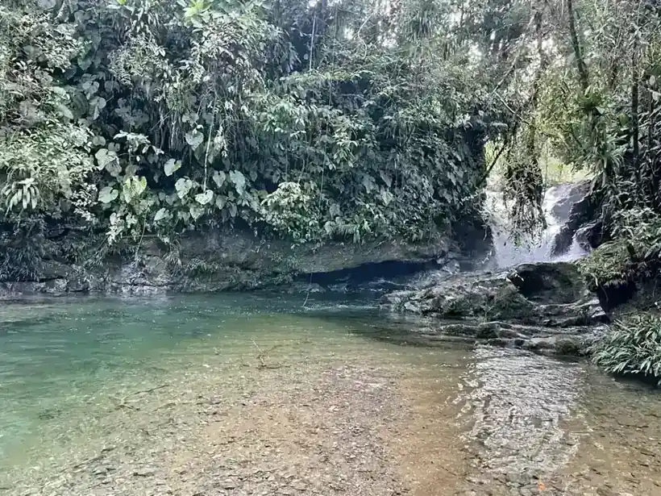

Valle de las Cascadas
Adventure 3/5La PiñuelaLa PiñuelaThe full route at a calmer pace. You hike with a guide between waterfalls and natural pools, and sleep at an authentic family farm.
- Local guide for the whole route
- Entrance fees
- 4 meals
Private expeditions · Cocorná, Colombia
Hikes with a local guide and nights at family farms. You walk; we take care of the rest.
MedellínCocorná

Most popular
The full route at a calmer pace. You hike with a guide between waterfalls and natural pools, and sleep at an authentic family farm.

Three days through the Melcocho river canyon: crystal-clear natural pools, country trails and two nights at the same authentic farm.

Learn to make panela at a traditional sugarcane mill, walk to the waterfalls, swim and have lunch by a natural pool.
Private tours. Price per person for a group of 4; for other group sizes, message us on WhatsApp.
About us
We work with guides and farming families from Cocorná. Routes off the beaten path, in private groups.
Google reviews · ★★★★★
★★★★★
Our family of three, with an eight-year-old, had a fantastic experience in the Valle de las Cascadas. Our guide and his mule were invaluable: they supported the family and took us to beautiful pools and farms we would never have found on our own. The people we stayed with were great hosts.
★★★★★
They organised everything for us, including a two-day hike through the Valle de las Cascadas and a rafting trip.
Excerpts from the original reviews.
How it works
Pick an expedition and a date. All of them start at 8:00 a.m.
On WhatsApp we confirm availability and the price for your group.
With a 50% deposit. Free cancellation up to 3 days before.
Open groups
Our expeditions are private, but if you travel solo or as a couple we can match you with other travellers on the same dates. That way the cost of the guide and transport is shared, and the price per person goes down. There is no minimum group size: you choose whether you go private or join a group.
Good to know: an open group is only certain once every traveller has confirmed. We let you know on WhatsApp as soon as it is set.

Frequently asked questions
Each expedition page states exactly what is included. As a rule, the price includes the guide, entrance fees and the meals listed in the program. We include meals where arranging them yourself would be hard (remote trails, farms, areas with few places to eat) and leave them out where it is easy to arrange them yourself, such as in towns with plenty of restaurants.
For every expedition we offer a central meeting and return point, and we design routes to be easy to reach by public transport too. If you prefer to skip the logistics, we can always quote additional private transport, including a private transfer from Medellín, to make the trip more comfortable.
You can cancel up to 3 days before your expedition starts and receive a full refund. If we cancel, we also refund everything you have paid.
To secure your spot we ask for a 50% deposit. This confirms your expedition and lets us arrange guides, accommodation, transport and food in advance. Message us on WhatsApp at +57 350 418 6252. We recommend booking early, as guide availability is limited.
Message us and we'll put your expedition together.